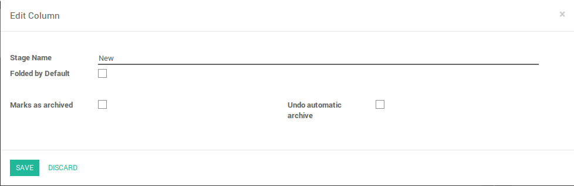
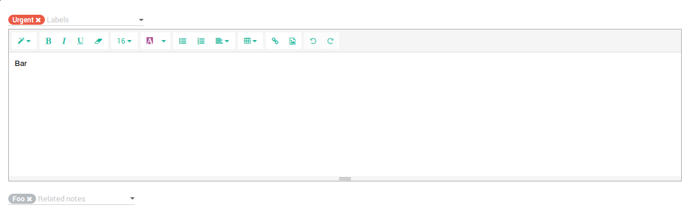

<section class="oe_container">
    <div class="oe_row oe_spaced">
        <h2 class="oe_slogan" style="color:#875A7B;">Auto archive notes</h2>
        <h3 class="oe_mt32 oe_slogan">
            Set stages to auto archive notes
        </h3>
        <div class="oe_row_img oe_centered oe_mt32">
            
        </div>
    </div>
</section>

<section class="oe_container oe_dark">
    <div class="oe_row oe_spaced">
        <h2 class="oe_slogan" style="color:#875A7B;">Related notes</h2>
        <h3 class="oe_mt32 oe_slogan">
            Relate notes between each other
        </h3>
        <div class="oe_row_img oe_centered oe_mt32">
            
        </div>
    </div>
</section>

<section class="oe_container oe_separator">
</section>
